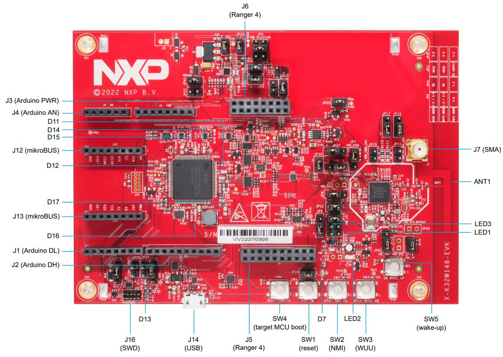
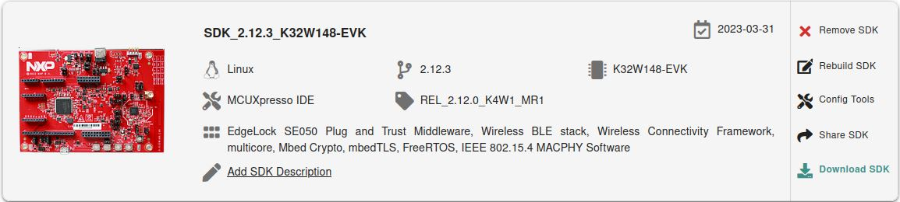
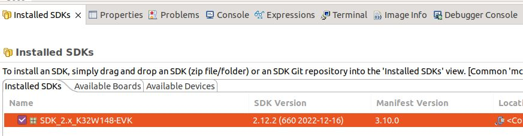
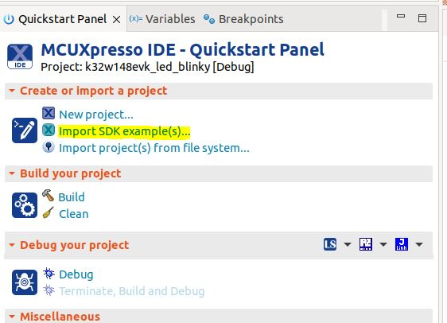
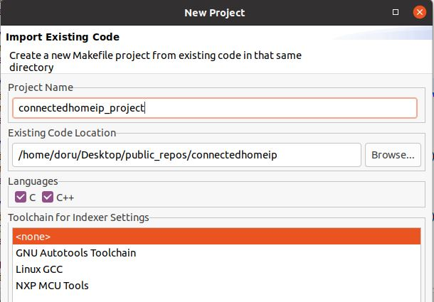
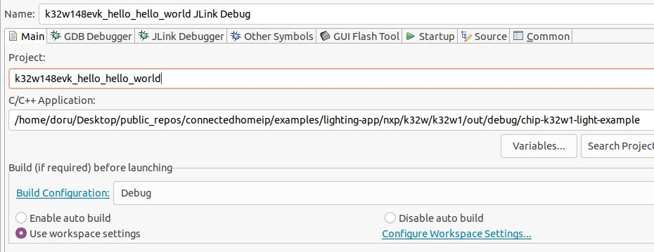
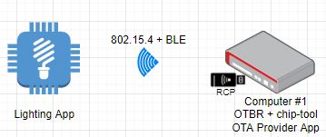

Matter K32W1 Contact Sensor Example Application#
Matter K32W1 Contact Sensor Example uses buttons to test changing the lock and device states and LEDs to show the state of these changes. You can use this example as a reference for creating your own application.
The example is based on Matter and the NXP K32W1 SDK, and a simulated contact sensor over a low-power, 802.15.4 Thread network.
The example behaves as a Matter accessory, that is a device that can be paired into an existing Matter network and can be controlled by this network.
Introduction#

The K32W1 contact sensor example application provides a working demonstration of a connected contact sensor device, built using the Matter codebase and the NXP K32W1 SDK. The example supports remote access (e.g.: using CHIP Tool from a mobile phone) and control of a simulated contact sensor over a low-power, 802.15.4 Thread network. It is capable of being paired into an existing Matter network along with other Matter-enabled devices.
The Matter device that runs the contact sensor application is controlled by the Matter controller device over the Thread protocol. By default, the Matter device has Thread disabled, and it should be paired over Bluetooth LE with the Matter controller and obtain configuration from it. The actions required before establishing full communication are described below.
Bluetooth LE Advertising#
In this example, to commission the device onto a Matter network, it must be discoverable over Bluetooth LE. For security reasons, you must start Bluetooth LE advertising manually after powering up the device by pressing Button SW2.
Bluetooth LE Rendezvous#
In this example, the commissioning procedure (called rendezvous) is done over Bluetooth LE between a Matter device and the Matter controller, where the controller has the commissioner role.
To start the rendezvous, the controller must get the commissioning information from the Matter device. The data payload is encoded within a QR code, or printed to the UART console.
Thread Provisioning#
Device UI#
The example application provides a simple UI that depicts the state of the device and offers basic user control. This UI is implemented via the general-purpose LEDs and buttons built in the K32W1 EVK board.
LED 2 shows the overall state of the device and its connectivity. Four states are depicted:
Short Flash On (50ms on/950ms off) — The device is in an unprovisioned (unpaired) state and is waiting for a commissioning application to connect.
Rapid Even Flashing (100ms on/100ms off) — The device is in an unprovisioned state and a commissioning application is connected via BLE.
Short Flash Off (950ms on/50ms off) — The device is full provisioned, but does not yet have full network (Thread) or service connectivity.
Solid On — The device is fully provisioned and has full network and service connectivity.
NOTE: LED2 will be disabled when CHIP_DEVICE_CONFIG_ENABLE_OTA_REQUESTOR is
enabled. On K32W1 EVK board, PTB0 is wired to LED2 also is wired to CS (Chip
Select) External Flash Memory. OTA image is stored in external memory because of
it’s size. If LED2 is enabled then it will affect External Memory CS and OTA
will not work.
RGB LED shows the state of the simulated contact sensor. when the LED is lit, the sensor is contacted, when not lit, the sensor is non-contacted.
Button SW2. SHORT press function is overloaded depending on the device type and commissioning state. If the device is not commissioned, a SHORT press of the button will enable Bluetooth LE advertising for a predefined period of time. If the device is commissioned and is acting as a LIT ICD then a SHORT press of the button will enable Active Mode. A LONG Press of Button SW2 initiates a factory reset. After an initial period of 3 seconds, LED 2 and RGB LED will flash in unison to signal the pending reset. After 6 seconds will cause the device to reset its persistent configuration and initiate a reboot. The reset action can be cancelled by press SW2 button at any point before the 6 second limit.
Button SW3 can be used to change the state of the simulated contact sensor. The button behaves as a toggle, swapping the state every time it is short pressed. When long pressed, it does a clean soft reset that takes into account Matter shutdown procedure.
Building#
In order to build the Matter example, we recommend using a Linux distribution (the demo-application was compiled on Ubuntu 20.04).
Download K32W1 SDK for Matter. Creating an nxp.com account is required before being able to download the SDK. Once the account is created, login and follow the steps for downloading K32W1 SDK. The SDK Builder UI selection should be similar with the one from the image below.

user@ubuntu:~/Desktop/git/connectedhomeip$ export NXP_K32W1_SDK_ROOT=/home/user/Desktop/SDK_K32W1/
user@ubuntu:~/Desktop/git/connectedhomeip$ source ./scripts/activate.sh
user@ubuntu:~/Desktop/git/connectedhomeip$ scripts/checkout_submodules.py --shallow --platform nxp --recursive
user@ubuntu:~/Desktop/git/connectedhomeip$ cd examples/contact-sensor-app/nxp/k32w/k32w1
user@ubuntu:~/Desktop/git/connectedhomeip/examples/contact-sensor-app/nxp/k32w/k32w1$ gn gen out/debug
user@ubuntu:~/Desktop/git/connectedhomeip/examples/contact-sensor-app/nxp/k32w/k32w1$ ninja -C out/debug
In case that Openthread CLI is needed, chip_with_ot_cli build argument must be set to 1.
After a successful build, the elf and srec files are found in out/debug/ -
see the files prefixed with chip-k32w1-contact-example.
Long Idle Time ICD Support#
By default, contact-sensor is compiled as SIT ICD (Short Idle Time Intermittently Connected Device) - see rules from k32w1_sdk.gni:
chip_ot_idle_interval_ms = 2000 # 2s Idle Intervals
chip_ot_active_interval_ms = 500 # 500ms Active Intervals
nxp_idle_mode_duration_s = 600 # 10min Idle Mode Interval
nxp_active_mode_duration_ms = 10000 # 10s Active Mode Interval
nxp_active_mode_threshold_ms = 1000 # 1s Active Mode Threshold
nxp_icd_supported_clients_per_fabric = 2 # 2 registration slots per fabric
If LIT ICD support is needed then chip_enable_icd_lit=true must be specified
as gn argument and the above parameters can be modified to comply with LIT
requirements (e.g.: LIT devices must configure
chip_ot_idle_interval_ms > 15000). Example LIT configuration:
chip_ot_idle_interval_ms = 15000 # 15s Idle Intervals
chip_ot_active_interval_ms = 500 # 500ms Active Intervals
nxp_idle_mode_duration_s = 3600 # 60min Idle Mode Interval
nxp_active_mode_duration_ms = 0 # 0 Active Mode Interval
nxp_active_mode_threshold_ms = 30000 # 30s Active Mode Threshold
ICD parameters that may be disabled once LIT functionality is enabled:
chip_persist_subscriptions: try once to re-establish subscriptions from the server side after reboot
chip_subscription_timeout_resumption: same as above + try to re-establish timeout out subscriptions
using Fibonacci backoff for retries pacing.
Manufacturing data#
Use chip_with_factory_data=1 in the gn build command to enable factory data.
For a full guide on manufacturing flow, please see Guide for writing manufacturing data on NXP devices.
Flashing#
Two images must be written to the board: one for the host (CM33) and one for the
NBU (CM3).
The image needed on the host side is the one generated in out/debug/ while the
one needed on the NBU side can be found in the downloaded NXP-SDK package at
path -
middleware\wireless\ieee-802.15.4\bin\k32w1\k32w1_nbu_ble_15_4_dyn_matter_$version.sb3.
Flashing the NBU image#
NBU image should be written only when a new NXP-SDK is released.
K32W148 board quick start guide
can be used for updating the NBU/radio core:
Section 2.5 – Get Software – install
SPSDK(Secure Provisioning Command Line Tool)Section 3.3 – Updating
NBUfor Wireless examples - use the corresponding.sb3file found in the SDK package at pathmiddleware\wireless\ieee-802.15.4\bin\k32w1\
Flashing the host image#
Host image is the one found under out/debug/. It should be written after each
build process.
If debugging is needed then jump directly to the Debugging section. Otherwise, if only flashing is needed then JLink 7.84b can be used:
Plug K32W1 to the USB port (no need to keep the SW4 button pressed while doing this)
Create a new file,
commands_script, with the following content (change application name accordingly):
reset
halt
loadfile chip-k32w1-contact-example.srec
reset
go
quit
copy the application and
commands_scriptin the same folder that JLink executable is placed. Execute:
$ jlink -device K32W1480 -if SWD -speed 4000 -autoconnect 1 -CommanderScript commands_script
Debugging#
One option for debugging would be to use MCUXpresso IDE.
Drag-and-drop the zip file containing the NXP SDK in the “Installed SDKs” tab:

Import any demo application from the installed SDK:
Import SDK example(s).. -> choose a demo app (demo_apps -> hello_world) -> Finish

Flash the previously imported demo application on the board:
Right click on the application (from Project Explorer) -> Debug as -> JLink/CMSIS-DAP
After this step, a debug configuration specific for the K32W1 board was created. This debug configuration will be used later on for debugging the application resulted after ot-nxp compilation.
Import Matter repo in MCUXpresso IDE as Makefile Project. Use none as Toolchain for Indexer Settings:
File -> Import -> C/C++ -> Existing Code as Makefile Project

Replace the path of the existing demo application with the path of the K32W1 application:
Run -> Debug Configurations... -> C/C++ Application

OTA#
Convert srec into sb3 file#
The OTA image files must be encrypted using Over The Air Programming Tool
(OTAP).
Bootloader will load the new OTA image only if it detects that the file was
encrypted with the OTAP correct keys.
.srec file is input for Over The air Programming (OTAP) application
(unencrypted) and it’s converted to .sb3 format (encrypted).
In OTAP application
select OTA protocol =>
OTAPMatterBrowse File
follow default options (KW45/K32W148, Preserve NVM)
image information: will update “Application Core (MCU)” - this will generate the image only for the CM33 core
keep other settings at default values
Convert sb3 into ota file#
In order to build an OTA image, use NXP wrapper over the standard tool
src/app/ota_image_tool.py:
scripts/tools/nxp/factory_data_generator/ota_image_tool.pyThe tool can be used to generate an OTA image with the following format:| OTA image header | TLV1 | TLV2 | ... | TLVn |where each TLV is in the form|tag|length|value|
Note that “standard” TLV format is used. Matter TLV format is only used for factory data TLV value.
Please see more in the OTA image tool guide.
Here is an example that generates an OTA image with application update TLV from
a sb3 file:
./scripts/tools/nxp/ota/ota_image_tool.py create -v 0xDEAD -p 0xBEEF -vn 43033 -vs "1.0" -da sha256 --app-input-file ~/binaries/chip-k32w1-43033.sb3 ~/binaries/chip-k32w1-43033.ota
A note regarding OTA image header version (-vn option). An application binary
has its own software version (given by
CHIP_DEVICE_CONFIG_DEVICE_SOFTWARE_VERSION, which can be overwritten). For
having a correct OTA process, the OTA header version should be the same as the
binary embedded software version. A user can set a custom software version in
the gn build args by setting chip_software_version to the wanted version.
Running OTA#
The OTA topology used for OTA testing is illustrated in the figure below. Topology is similar with the one used for Matter Test Events.

The concept for OTA is the next one:
there is an OTA Provider Application that holds the OTA image. In our case, this is a Linux application running on an Ubuntu based-system;
the OTA Requestor functionality is embedded inside the Contact Sensor Application. It will be used for requesting OTA blocks from the OTA Provider;
the controller (a linux application called chip-tool) will be used for commissioning both the device and the OTA Provider App. The device will be commissioned using the standard Matter flow (BLE + IEEE 802.15.4) while the OTA Provider Application will be commissioned using the onnetwork option of chip-tool;
during commissioning, each device is assigned a node id by the chip-tool (can be specified manually by the user). Using the node id of the device and of the contact sensor application, chip-tool triggers the OTA transfer by invoking the announce-ota-provider command - basically, the OTA Requestor is informed of the node id of the OTA Provider Application.
Computer #1 can be any system running an Ubuntu distribution. We recommand using CSA official instructions from here, where RPi 4 are proposed. Also, CSA official instructions document point to the OS/Docker images that should be used on the RPis. For compatibility reasons, we recommand compiling chip-tool and OTA Provider applications with the same commit id that was used for compiling the Contact Sensor Application. Also, please note that there is a single controller (chip-tool) running on Computer #1 which is used for commissioning both the device and the OTA Provider Application. If needed, these instructions could be used for connecting the RPis to WiFi.
Build the Linux OTA provider application:
user@computer1:~/connectedhomeip$ : ./scripts/examples/gn_build_example.sh examples/ota-provider-app/linux out/ota-provider-app chip_config_network_layer_ble=false
Build Linux chip-tool:
user@computer1:~/connectedhomeip$ : ./scripts/examples/gn_build_example.sh examples/chip-tool out/chip-tool-app
Start the OTA Provider Application:
user@computer1:~/connectedhomeip$ : rm -rf /tmp/chip_*
user@computer1:~/connectedhomeip$ : ./out/ota-provider-app/chip-ota-provider-app -f chip-k32w1-43033.ota
Provision the OTA provider application and assign node id 1. Also, grant ACL entries to allow OTA requestors:
user@computer1:~/connectedhomeip$ : rm -rf /tmp/chip_*
user@computer1:~/connectedhomeip$ : ./out/chip-tool-app/chip-tool pairing onnetwork 1 20202021
user@computer1:~/connectedhomeip$ : ./out/chip-tool-app/chip-tool accesscontrol write acl '[{"fabricIndex": 1, "privilege": 5, "authMode": 2, "subjects": [112233], "targets": null}, {"fabricIndex": 1, "privilege": 3, "authMode": 2, "subjects": null, "targets": null}]' 1 0
Provision the device and assign node id 2:
user@computer1:~/connectedhomeip$ : ./out/chip-tool-app/chip-tool pairing ble-thread 2 hex:<operationalDataset> 20202021 3840
Start the OTA process:
user@computer1:~/connectedhomeip$ : ./out/chip-tool-app/chip-tool otasoftwareupdaterequestor announce-ota-provider 1 0 0 0 2 0
Low power#
The example also offers the possibility to run in low power mode. This means that the board will go in deep sleep most of the time and the power consumption will be very low.
In order to build with low power support, the chip_with_low_power=1 must be
provided to the build system. In this case, please note that the GN build
arguments chip_openthread_ftd and chip_with_ot_cli must be set to false/0
and chip_logging must be set to false to disable logging.
In order to maintain a low power consumption, the LEDs showing the state of the contact sensor and the internal state are disabled. Console logs can be used instead. Also, please note that once the board is flashed with MCUXpresso the debugger disconnects because the board enters low power.
Known issues#
SRP cache on the openthread border router needs to flushed each time a new commissioning process is attempted. For this, factory reset the device, then execute ot-ctl server disable followed by ot-ctl server enable. After this step, the commissioning process of the device can start;
Due to some MDNS issues, the commissioning of the OTA Provider Application may fail. Please make sure that the SRP cache is disabled (ot-ctl srp server disable) on the openthread border router while commissioning the OTA Provider Application;
No other Docker image should be running (e.g.: Docker image needed by Test Harness) except the OTBR one. A docker image can be killed using the command:
user@computer1:~/connectedhomeip$ : sudo docker kill $container_id
In order to avoid MDNS issues, only one interface should be active at one time. E.g.: if WiFi is used then disable the Ethernet interface and also disable multicast on that interface:
user@computer1:~/connectedhomeip$ sudo ip link set dev eth0 down
user@computer1:~/connectedhomeip$ sudo ifconfig eth0 -multicast
If OTBR Docker image is used, then the “-B” parameter should point to the interface used for the backbone.
If Wi-Fi is used on a RPI4, then a 5Ghz network should be selected. Otherwise, issues related to BLE-WiFi combo may appear.